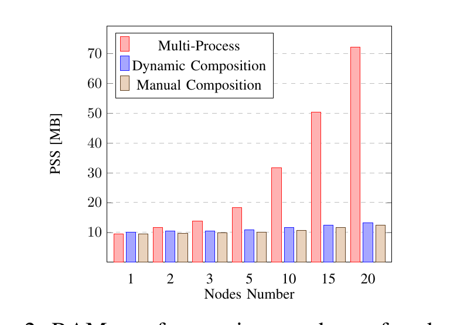
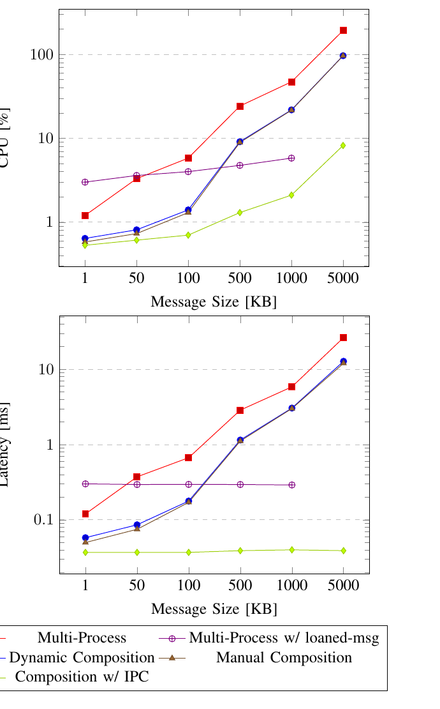

ROS2 노드 컴포지션(Node Composition): 개념과 실제 성능 임팩트
참고 자료
본 글은 ROS2 공식 문서(Composition 개념, Intra-Process Communication 튜토리얼), 학술 논문(S. Macenski, A. Soragna, M. Carroll, Z. Ge, "Impact of ROS 2 Node Composition in Robotic Systems," arXiv:2305.09933, 2023), 그리고 Isaac ROS GitHub 이슈의 공개 게시물을 바탕으로 정리했다.
왜 조사했는가
지난번 NITROS 조사에서 "zero-copy 이득을 보려면 가속된 노드들이 전부 같은 프로세스에서 실행돼야 한다"고 적었는데, 정작 "같은 프로세스에서 실행한다"는 게 ROS2에서 정확히 뭘 뜻하는지, 그게 왜 zero-copy의 전제조건인지는 제대로 파본 적이 없었다. 그 "같은 프로세스" 메커니즘의 정체가 바로 컴포지션 (Composition)이다. NITROS를 다시 평가하려면 이 개념부터 정확히 알아야 한다는 게 이번 조사의 동기다.
Composition이 뭔가
ROS1에는 두 가지 코드 작성 방식이 있었다 — 독립 실행파일로 컴파일되는 노드(Node)와, 공유 라이브러리로 컴파일돼서 컨테이너 프로세스가 런타임에 불러오는 노드릿(Nodelet). 문제는 두 방식의 API가 서로 달라서, 나중에 "이 노드를 다른 노드와 한 프로세스에 묶고 싶다"는 결정을 내리면 코드를 다시 써야 했다.
ROS2는 이 API를 통합했다. 이제 코드는 전부 컴포넌트(Component)로 작성하고, 그 컴포넌트를 독립 프로세스로 띄울지 여러 개를 한 프로세스에 묶어서 띄울지는 배포 시점의 결정으로 미룰 수 있다 — 코드를 고칠 필요가 없다:
"By making the process layout a deploy-time decision the user can choose between running multiple nodes in separate processes with the benefits of process/fault isolation... and running multiple nodes in a single process with the lower overhead and optionally more efficient communication." — ROS2 Composition 공식 문서
컴포넌트를 조합하는 방법은 두 가지다:
- 수동(정적) 컴포지션: 컴파일 타임에 어떤 컴포넌트들을 한 프로세스에 묶을지 코드로 명시. 유연성은 제일 낮지만 스레드 우선순위 등을 세밀하게 통제할 수 있어서, 리소스가 극도로 제한된 환경(임베디드)에 적합
- 동적(런타임) 컴포지션: 컴포넌트를 공유 라이브러리로 빌드해두고,
component_container프로세스가 실행 중에ros2 component load서비스 호출이나 launch 파일로 불러온다. 배포 후에도 어떤 컴포넌트를 어느 프로세스에 둘지 바꿀 수 있어서 대부분의 경우 이쪽이 권장됨
컴포넌트 컨테이너는 내부적으로 3가지 executor 조합을 기본 제공한다:
단일 스레드 executor를 컴포넌트들이 공유(component_container), 멀티
스레드 executor를 공유(component_container_mt), 컴포넌트마다 독립 executor
(component_container_isolated). 어느 걸 쓰느냐에 따라 지연시간/CPU
프로파일이 상당히 달라진다(아래 실측 참고).
Zero-copy IPC는 정확히 어떻게 동작하나
핵심은 NodeOptions().use_intra_process_comms(true)다. 이걸 켜고
std::unique_ptr로 발행/구독하면, 미들웨어(DDS)를 거치지 않고 메시지의
포인터 자체가 구독자에게 그대로 넘어간다 — 직렬화/역직렬화, 복사가 전혀
없다. 공식 데모에서 발행 시점과 수신 시점에 메시지의 메모리 주소를 같이
찍어보면 완전히 동일한 주소가 나온다.
이때 두 가지 비직관적인 제약이 있다 (공식 튜토리얼에서 명시):
- 1:N 팬아웃에서는 한 구독자만 원본을 받는다.
unique_ptr은 소유권이 하나만 존재한다는 뜻이라, 구독자가 여럿이면 그중 딱 하나만 원본 포인터를 받고 나머지는 전부 복사본을 받는다 — 그리고 어느 구독자가 원본을 받을지는 정해져 있지 않다(단순히 마지막으로 전달되는 쪽). 두 개의 이미지 뷰어를 붙인 공식 데모에서 실제로 이 현상이 재현된다. - 먼저 발행되면 유실될 수 있다. intra-process 통신은 "latching" 같은 기능이 없어서, 구독이 완전히 설정되기 전에 발행된 메시지는 그냥 사라진다 — 레이스 컨디션이다. 데모에서도 "첫 번째 메시지는 보통 유실된다"고 명시돼 있다.
또한 QoS 쪽 제약도 있다: intra-process 통신은 VOLATILE durability만
허용한다. TRANSIENT_LOCAL처럼 늦게 붙는 구독자에게 마지막 값을 재전송해주는
durability를 쓰는 토픽이 같은 컨테이너에 섞여 있으면 컴포넌트 생성 자체가
예외를 던지며 실패한다 — 실제로 Isaac ROS의 이미지 파이프라인 컴포지션에서
"intraprocess communication allowed only with volatile durability" 예외로
보고된 사례가
있다.
실측 데이터: 얼마나 차이 나나
Macenski 등의 논문이 Raspberry Pi 4(ARM, 임베디드 로봇 대표 사양)와 x86에서 멀티프로세스 vs 정적/동적 컴포지션을 정량 비교했다.

원인은 ROS2 프로세스마다 독립적인 DDS 네트워크 참가자를 만드는데, discovery 과정에서 이게 O(N²)로 자원을 잡아먹기 때문이다(2번째 프로세스 추가 시 +2.1MB, 20번째에는 +4.3MB) — 논문 표현으로는 "20노드 컴포지션 시스템이 2노드 멀티프로세스 시스템과 거의 같은 메모리를 쓴다."

구체적 수치:
- 멀티프로세스는 1MB 넘는 메시지에서 레이턴시가 발행 주기의 30%를 초과 — 실시간성이 중요한 지표인데 여기서 무너짐
- 동적 컴포지션 + IPC는 메시지 크기와 무관하게 레이턴시가 항상 ~40μs로 일정 — 모놀리식(단일 프로그램) 수준
- "loaned messages"(멀티프로세스에서 zero-copy를 흉내내려는 별도 최적화)는 2MB 넘는 메시지에서 반복적으로 크래시했고, 500Hz 넘는 발행 빈도에서 데드락이 발생해 450Hz로 상한을 걸어야 했다 — "as of today, the risk of stability issues"라고 논문이 직접 경고함
- 실제 시스템 벤치마크: Nav2(15노드)를 ARM에서 컴포지션했더니 CPU 28%, RAM 33% 절감(x86에서는 CPU 25%, RAM 44%). iRobot Create 3(RAM 예산 60MB 미만인 임베디드 보드)는 논문 표현으로 "컴포지션 없이는 아예 불가능했을" 제품 — 멀티프로세스로 구성했다면 이 로봇에 실제로 탑재된 것보다 훨씬 큰 메모리가 필요했을 것으로 추정됨
문제점과 실제 제약
1. Fault isolation(장애 격리)을 잃는다. 이게 가장 근본적인 트레이드오프다 — 논문도 이렇게 정리한다:
"For systems under development, components are often placed in separate processes so that failures do not disturb the larger system... As programs become more mature, they may be grouped into processes to reduce latency or share resources."
한 프로세스에 여러 컴포넌트를 묶으면, 컴포넌트 하나가 크래시할 때 같은 프로세스의 나머지 컴포넌트도 전부 같이 죽는다. 개발 중에는 프로세스를 분리해서 디버깅을 쉽게 하고, 시스템이 안정화된 뒤에 묶는 게 논문이 제안하는 실무 순서다.
2. QoS durability 제약 — 위에서 설명한 대로 VOLATILE만 허용되고,
TRANSIENT_LOCAL이 필요한 토픽이 섞이면 컴포넌트 생성이 실패한다.
3. Executor 선택에 따라 성능이 크게 갈린다. 논문의 별도 실험(구독마다 500μs 작업 부하를 줌)에서: 단일 스레드 executor는 CPU는 제일 적게 쓰지만 병렬 처리가 안 돼서 레이턴시가 제일 나쁘다. Isolated 컨테이너(컴포넌트마다 독립 executor)는 구독 개수가 코어 수를 넘어서면 유리해지고, ROS2 타이머를 쓰는 노드에서 특히 유리하다(타이머는 매 executor 반복마다 체크해야 하는데, 독립 executor면 그 오버헤드가 자기 컴포넌트에만 적용됨). "어느 게 항상 좋다"가 아니라 워크로드에 따라 선택해야 하는 문제.
4. loaned messages는 아직 실무에 못 쓸 수준. 위에서 언급한 대로 큰 메시지에서 반복 크래시, 높은 빈도에서 데드락 — 멀티프로세스에서 zero-copy를 흉내내고 싶어도 이 경로는 논문 작성 시점 기준 안정성 문제가 있다.
득실 정리
| 얻는 것 | 잃는 것 | |
|---|---|---|
| 메모리 | 노드 수가 늘어도 거의 평평(O(N²) discovery 비용 회피) | 없음 — 순수 이득 |
| CPU/레이턴시 | 큰 메시지에서 수십~수백 배 개선, IPC는 메시지 크기 무관 ~40μs 고정 | 없음(measured 상) |
| 장애 격리 | — | 컴포넌트 하나 크래시가 같은 프로세스 전체를 죽임 |
| QoS 유연성 | — | intra-process는 VOLATILE durability만 허용 |
| 개발 편의성 | 코드 변경 없이 배포 시점에 프로세스 레이아웃 결정 가능 | executor/컨테이너 선택에 성능이 크게 좌우돼 튜닝 필요 |
NITROS와의 연결
이제 지난 글의 "NITROS의 zero-copy는 같은 프로세스여야만 작동한다"는 제약이 왜 있는지 설명된다 — NITROS의 타입 적응/협상도 결국 이 컴포지션의 intra-process 메커니즘(포인터 그대로 전달) 위에서 동작하기 때문에, 원천적으로 같은 프로세스(같은 컴포넌트 컨테이너) 안에 있어야만 성립하는 것이다. 그리고 이번 조사로 하나 더 명확해진 게 있다 — 컴포지션 자체가 공짜가 아니라 장애 격리를 명시적으로 포기하는 선택이라는 것. NITROS를 도입하려면 GPU↔CPU 복사 비용뿐 아니라, 그 전제조건인 컴포지션이 가져오는 "한 컴포넌트가 죽으면 전부 죽는다"는 위험까지 같이 감수하는 것임을 이제는 분명히 알고 판단할 수 있다.